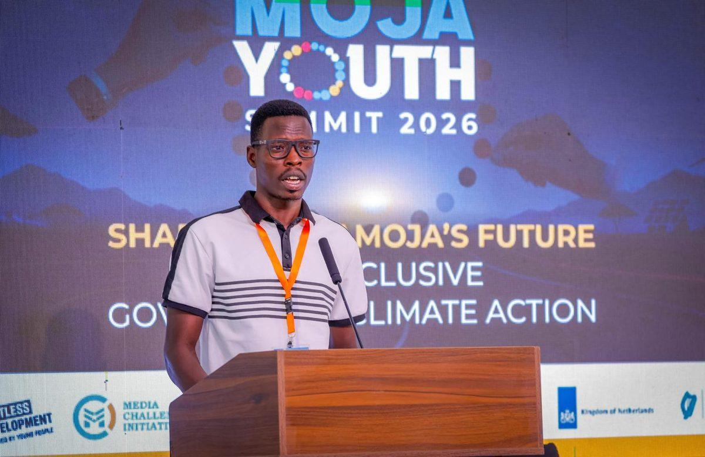

Muya James Jemo
Executive Director / Founder
A Development Practitioner and Youth Leader from Karamoja, Uganda. He holds a Bachelor’s Degree in Development Studies & Management and brings multi-lateral skills in Videography, Photography, Waste Management, and Climate Change Action.
Community development initiatives since high school in 2010 include the 2020 Karamoja Go Green Campaign; Co-founded KAYESE 256; previously a member of Youth Advocacy and Development Network Uganda, Karamoja Human Rights Coalition Network; Research Associate to the Uganda Research Info Team; and Team Lead, Karamoja Language Translators Hub.
He serves on the Board of Moroto High School; Youth Professionals for Agricultural Development (YPARD); Lake Victoria Founding Youth Ambassadors Programme (LVYAP); IGAD Regional Youth Coalition on Climate-Resilient Agri-Food Systems (IGAD-RYCCAS); Civic Advisory Hub Youth Group; Ateker Creative Bridge; Universal Periodic Review Info Group; and Karamoja Defend Defenders Coalition. He is Chairperson of the Karamoja Creatives Association.
Key projects led: “One Person, One Tree” (climate action); “Skilling Young People, Empowering Young People”; “Moroto Ni Wetu”; and the weekly Moroto 5K Run.
“Youth are not just the future, but the present drivers of change.”